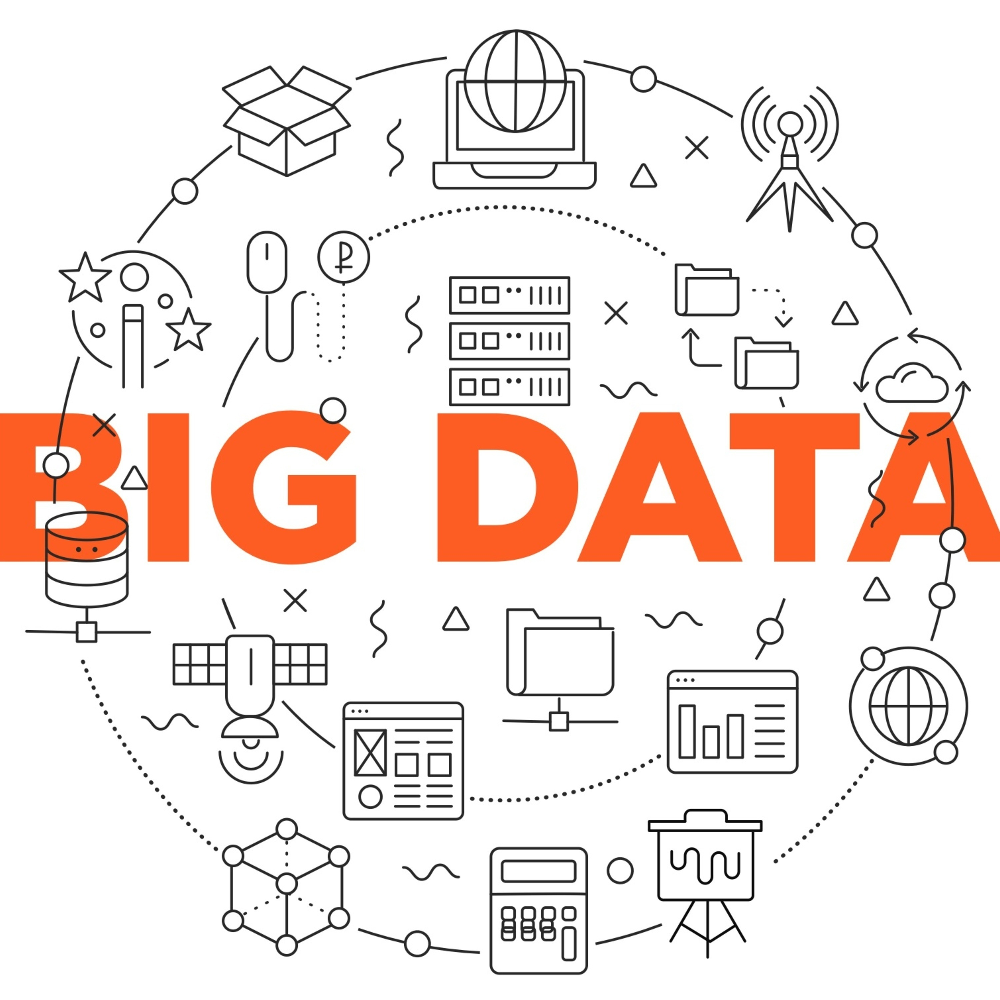

Что же такое Big Data?
О больших данных заговорили в середине нулевых, когда объёмы информации, которой оперировали для вычислений и анализа, росли в геометрической прогрессии.
Тогда в редакции журнала Nature предложили относить к Big Data данные, объём которых превышает 150 Гб в сутки.
Другие эксперты предлагают считать большими данными всё, что больше 8 Гб, то есть стандартного размера оперативной памяти ПК.
Гораздо проще определить, что относится к большим данным, через их применение.
Big Data — это массивы информации, которые помогают принимать обоснованные решения, их ещё называют data-driven, то есть основанные на данных.
Они позволяют строить прогнозные модели высокой точности. Такие используют, к примеру, в NASA, чтобы воспроизвести все детали будущей миссии.
Для сбора, хранения и анализа больших данных требуются специальные инструменты и оборудование.
К примеру, вместо одного ПК или сервера для хранения Big Data используют множество серверов или дата-центров по всему миру.
Параметры больших данных
Основные характеристики Big Data (больших данных) определяют как шесть «V»:

- Volume — объём — от 150 Гб в сутки.
- Velocity — скорость. Объём и содержимое Big Data ежесекундно меняются, поэтому собирать и обрабатывать их нужно на больших вычислительных мощностях. Например, сервис FlightRadar24, где отображаются все маршруты самолётов в режиме онлайн.
- Variety — разнообразие. Массив больших данных может включать фото, видео и тексты, файлы разных объёмов и форматов, данные из множества разных источников. Обычные данные, как правило, однородные, например таблица Excel с Ф. И. О. каждого сотрудника.
- Veracity — достоверность. Большие данные собирают только из источников, которым можно доверять, а для анализа используют точные и объективные методы. Поэтому корпорации и международные организации принимают стратегические решения на основе этих данных.
- Variability — изменчивость. Большие данные обновляются в режиме онлайн, поэтому их поток нестабилен. На него влияют скорость передачи, изменение источников, действия пользователей и даже смена сезонов. При анализе данных нужно учитывать и прогнозировать все эти факторы. Например, данные об авиаперелётах стоит использовать с поправками на задержки рейсов и погодные условия, из-за которых меняются маршруты.
- Value — ценность. Сами по себе данные ничего не значат, но на их основе можно сделать глубокие выводы и принимать взвешенные решения. Например, проанализировать трафик на дорогах в течение года и понять, как лучше построить маршруты для городского транспорта.
Как работает Big Data?
Для обспечения работоспособности технологии Big data используются следующие технологии:
- Сбор данных
- Социальные — всё, что публикуют и делают пользователи в соцсетях, онлайн-сервисах и приложениях. Сюда относят фото, видео, аудио, сообщения в мессенджерах, геолокации и хештеги.
- Статистические — все данные от госорганов и исследовательских компаний о людях, животных, транспортных средствах, товарах и услугах, политических и экономических явлениях.
- Медицинские — данные из электронных карт о медицинских показаниях, анализах, аппаратной диагностике, вакцинациях, историях болезней.
- Машинные — записи с камер наблюдения, видеорегистраторов, систем управления и умных устройств.
- Транзакционные — данные о платежах и переводах через банки и другие финансовые сервисы.
- Хранение
- DWH — или data warehouse — единое хранилище для всех данных, на основе которых компания формирует отчёты и принимает решения. Файлы в них сгруппированы по областям применения и расположены по хронологии.
- Data Lake — озёра данных, которые не имеют единого формата и чёткой структуры.
- СУБД
- Анализ
- SQL — язык запросов, который применяют при работе с реляционными СУБД.
- Нейросети, натренированные с помощью машинного обучения так, чтобы за секунды обработать тонны информации и представить точные данные для самых сложных задач.
Вы могли обратить внимание на нехватку одного очень важного пункта в технологиях, а именно обработку всех наших данных.
Информацию большого объёма с помощью обычных инструментов обработать будет сложно: на это уйдёт слишком много времени. Для этих задач применяют особое ПО, которое работает по технологии MapReduce. Сначала алгоритм отбирает данные по заданным параметрам, затем распределяет между отдельными узлами, серверами или компьютерами, а потом они одновременно обрабатывают эти сегменты данных, параллельно друг с другом. В таблице ниже приведены несколько примеров: